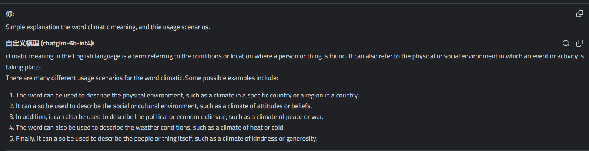

无门槛人人可用本地搭建chatglm-6b-int4-slim
文章发布时间:
最后更新时间:
最后更新时间:
涉及项目
- josStorer/selfhostedAI: https://github.com/josStorer/selfhostedAI
- 本地搭建懒人包，搭建完成后启动本地服务会启动一个本地服务器
- josStorer/chatGPTBox: https://github.com/josStorer/chatGPTBox
- Chrome插件: 可以发送请求到本地服务器，实现与本地模型进行交互
搭建步骤
1. 下载项目与模型文件
josStorer/selfhostedAI项目里面包含2个模型
- ChatGLM 6B Int4: 该包基于ChatGLM, 遵循Apache-2.0协议开源, 内置模型为 https://huggingface.co/silver/chatglm-6b-int4-slim 的裁切版
- lama.cpp: 该包基于llama.cpp, 内置命令行交互示例为josStorer修改的版本, 以支持windows的unicode输入, 内置模型来自Chinese-LLaMA-Alpaca
下载地址:
- 百度网盘: https://pan.baidu.com/s/1wchIUHgne3gncIiLIeKBEQ?pwd=1111#list/path=%2F
- GitHub Releases: https://github.com/josStorer/selfhostedAI/releases
下载文件: selfhostedAI-chatglm-6b-int4-windows-nvidia.7z
2. 解压缩与运行
解压缩到文件夹，文件结构如下图
双击chatglm-6b-int4.bat运行
由运行输出可知，运行需要 python3 环境和 C++ 环境。
这里报错'gcc' 不是内部或外部命令，也不是可运行的程序或批处理文件。是需要gcc编译器，但是我没有配置到系统变量Path里，但是并不影响程序的运行
3. 安装 Chrome Extension: chatGPTBox
不一定要用 Chrome ，其它支持的浏览器也可以，支持的浏览器的插件地址如下:
- Chrome: https://chrome.google.com/webstore/detail/chatgptbox/eobbhoofkanlmddnplfhnmkfbnlhpbbo
- Edge: https://microsoftedge.microsoft.com/addons/detail/fission-chatbox-best/enjmfilpkbbabhgeoadmdpjjpnahkogf
- Safari: https://apps.apple.com/app/fission-chatbox/id6446611121
- Firefox: https://addons.mozilla.org/zh-CN/firefox/addon/chatgptbox/
安装完成后点开插件，如下图，需要修改以下配置项
- API模式: 改为自定义模型
- 模型名称填写为:
chatglm-6b-int4 - 本地服务地址默认为:
http://localhost:8000/chat/completions
使用体验
单词解释
冒泡排序
然后就可以愉快的开始聊天了！
以下为聊天截图：
注：在浏览器的插件中发送一句话给模型之后对应的在命令行上会打印接收到请求的日志，如下图：
求解算法题
显然01背包问题解错了，我们尝试提示下看能不能解对
直接无响应了，查看后台日志，好家伙爆显存了
我的显卡是 NVIDIA GeForce RTX2060 显存6G
已经申请了5.07 G，然后又尝试申请116.00 MB空间申请不到了
1 | |

重启后再次尝试：